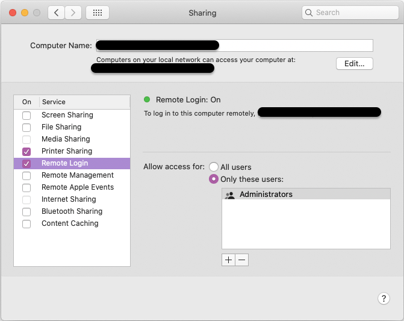

설치 환경 #
OS : MacOS Catalina 10.15.7
Hadoop : 3.3.0
STEP1. 하둡 설치 #
터미널에 명령 입력
brew install hadoop
만약 brew가 없다면 Homebrew에 접속하여 설치해준다.
STEP2. 환경변수 수정 #
## 하둡 버전 X.X.X는 본인이 설치한 버전으로 수정
cd /usr/local/cellar/hadoop/3.3.0/libexec/etc/hadoop
Finder에서 저 경로가 보이지 않았지만, 터미널에서 명령어 치니 경로가 잘 들어가지긴 했다.
그래도 직접 Finder에서 보기 위해서 Finder에서 ‘Cmd+Shift+G’ 를 치니 경로 검색 창이 떴고 그걸로 들어가니 Finder에서 볼 수 있었다.
수정해야 할 파일들
(1) hadoop-env.sh
(2) core-site.xml
(3) hdfs-site.xml
(4) mapred-site.xml
(5) yarn-site.xml
2-1. hadoop-env.sh 변경 #
open hadoop-env.sh
파일을 열어서 HADOOP_OPTS 부분을 변경해 줘야한다.
열어보니 아래 주석처리된 부분만 적혀있어서 마지막 한줄을 추가해서 입력해 주었다.

export HADOOP_OPTS=”-Djava.net.preferIPv4Stack=true -Djava.security.krb5.realm= -Djava.security.krb5.kdc=”
또한, 터미널에 아래 명령어 입력하면 java경로를 보여준다.
/usr/libexec/java_home
이때 나온 경로 또한 ‘hadoop-env.sh’ 파일 안에 없다면 추가해준다.
export JAVA_HOME=“/Library/Java/JavaVirtualMachines/adoptopenjdk-8.jdk/Contents/Home”
2-2. core-site.xml 변경 #
open core-site.xml
파일을 열어
<configuration>
<property>
<name>hadoop.tmp.dir</name>
<value>/usr/local/Cellar/hadoop/hdfs/tmp</value>
<description>A base for other temporary directories.</description>
</property>
<property>
<name>fs.default.name</name>
<value>hdfs://localhost:9000</value>
</property>
</configuration>
2-3. hdfs-site.xml 변경 #
open hdfs-site.xml
파일을 열어
<configuration>
<property>
<name>dfs.replication</name>
<value>1</value>
</property>
</configuration>
2-4. mapred-site.xml 변경 #
open mapred-site.xml
파일을 열어
<configuration>
<property>
<name>mapreduce.framework.name</name>
<value>yarn</value>
</property>
<property>
<name>mapreduce.application.classpath</name>
<value>$HADOOP_MAPRED_HOME/share/hadoop/mapreduce/*:$HADOOP_MAPRED_HOME/share/hadoop/mapreduce/lib/*</value>
</property>
</configuration>
2-5. yarn-site.xml 변경 #
open yarn-site.xml
파일을 열어
<configuration>
<property>
<name>yarn.nodemanager.aux-services</name>
<value>mapreduce_shuffle</value>
</property>
<property>
<name>yarn.nodemanager.env-whitelist</name>
<value>JAVA_HOME,HADOOP_COMMON_HOME,HADOOP_HDFS_HOME,HADOOP_CONF_DIR,CLASSPATH_PREPEND_DISTCACHE,HADOOP_YARN_HOME,HADOOP_MAPRED_HOME</value>
</property>
</configuration>
STEP3. 하둡 실행 #
3-1. 실행 전 준비 #
ssh localhost
터미널에 위 명령어를 입력해 봤을 때 마지막 접속시간이 안뜨고 Connection refused 라고 뜨면,
아래 명령어를 입력해준다.
ssh-keygen -t rsa -P '' -f ~/.ssh/id_rsa
cat ~/.ssh/id_rsa.pub >> ~/.ssh/authorized_keys
chmod 0600 ~/.ssh/authorized_keys
그냥 hadoop 폴더 내에서 입력했더니 ./ssh 폴더가 없다고 떴다.
나 같은 경우는 가장 하위 홈 디렉토리에서 명령어 입력하니 됐다. (/Users/“user_name”/)
이제 HDFS 로 포맷한다.
cd /usr/local/cellar/hadoop/3.3.0/libexec/bin
hdfs namenode -format
3-2. 하둡 실행 #
cd /usr/local/cellar/hadoop/3.3.0/libexec/sbin
./start-all.sh
# 또는
./start-dfs.sh
# 또는
./start-yarn.sh
위 명령어를 입력해주면 정상적으로 실행된다.
만약 아래 같은 에러가 나면 원격 로그인을 허용하지 않은 것이므로 환경설정에서 허용 해준다.
"localhost: ssh: connect to host localhost port 22: Connection refused"
환경설정 > 공유 > 원격 로그인에 체크박스를 눌러준다.

3-3. 실행 확인 #
jps
jps 를 터미널에 입력해주면, 하둡이 정상 설치 및 실행되고 있음을 아래와 같이 보여준다.
29171 NodeManager
28644 NameNode
29255 Jps
28745 DataNode
28206 ResourceManager
28879 SecondaryNameNode
그럼 이제 localhost 로 접속해서 확인해보자
Cluster status : http://localhost:8088
HDFS status : http://localhost:9870
Secondary NameNode status : http://localhost:9868
Cluster status #

HDFS status #
3-4. 실행 종료 #
## 만약 경로가 아래 경로에 들어와 있지 않다면 다시 들어가준다.
## 하지만 해당 경로에서 ./start-all.sh 로 실행 해 줬기 때문에
## 그냥 아래 ./stop-all.sh만 실행해주면 된다.
# cd /usr/local/cellar/hadoop/3.3.0/libexec/sbin
./stop-all.sh
# 또는
./stop-dfs.sh
# 또는
./stop-yarn.sh